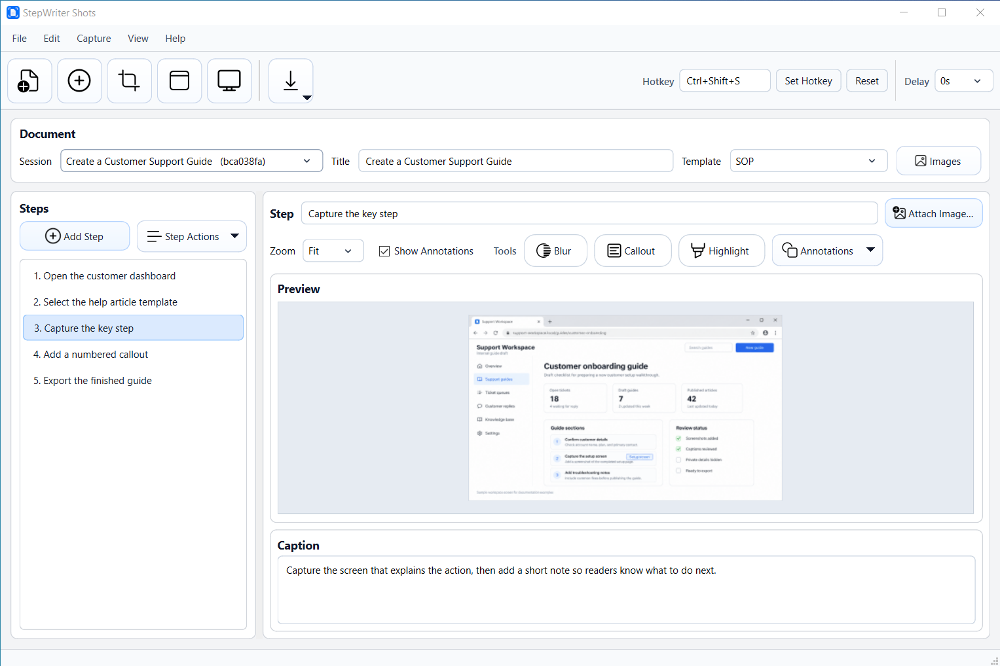
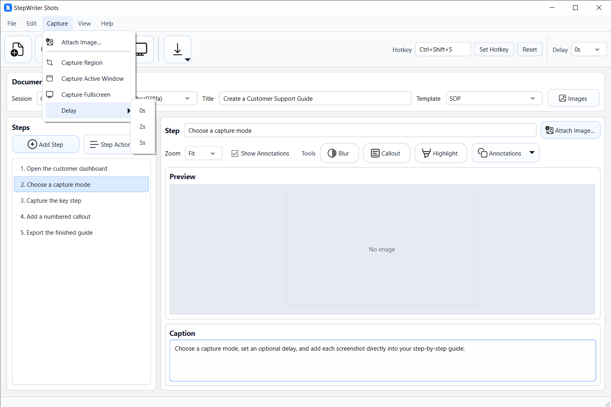
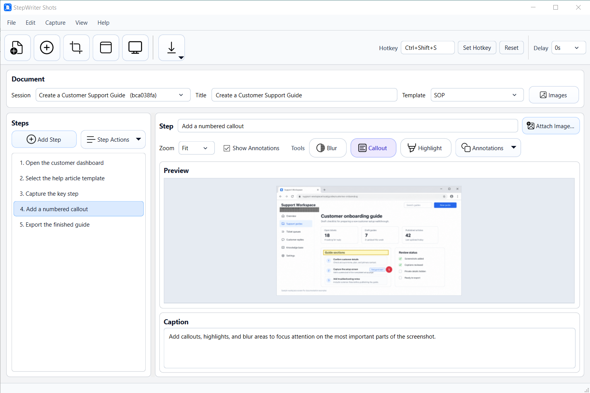
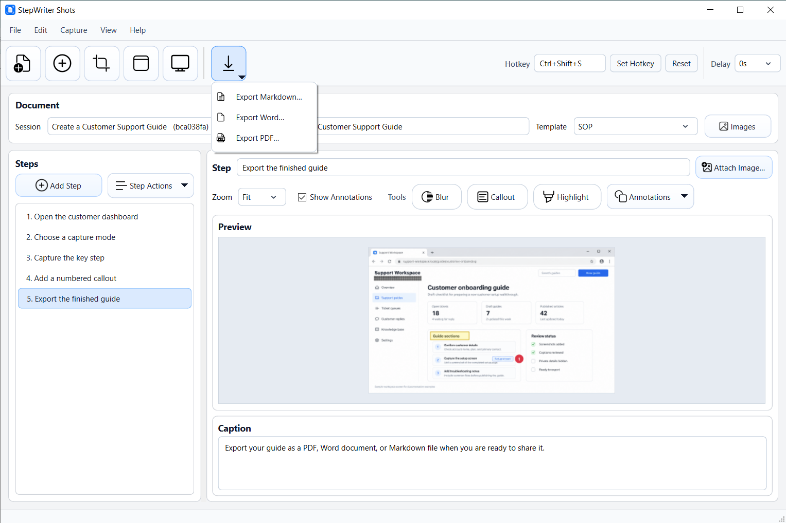
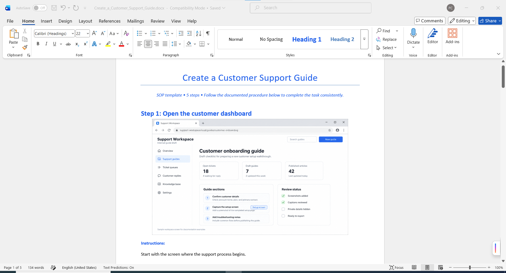

Capture or attach screenshots
Add screenshots using region capture, active window capture, fullscreen capture, or by attaching an existing image.
Windows screenshot documentation app
StepWriter Shots helps you capture a process, add notes and annotations, organise each step, and export a finished guide when you are ready to share it.
Available for Windows from Microsoft Store. Final pricing, offers, taxes, and availability are shown by Microsoft Store.

Creating useful process documentation often means jumping between screenshot tools, image editors, Word documents, and folders. StepWriter Shots brings the core workflow into one focused desktop app.
How it works
Add screenshots using region capture, active window capture, fullscreen capture, or by attaching an existing image.
Create a clear step-by-step structure with titles and captions so readers know what to do next.
Use callouts, highlights, and blur tools to focus attention on the important parts of each screenshot.
Export your documentation as Word, PDF, or Markdown when you are ready to share it.
Screenshots




StepWriter Shots is designed for people who need useful visual documentation without a heavy knowledge-base platform or cloud workflow.
Use it to document repeatable processes, create support guides, prepare lightweight training material, and capture bug reproduction steps.
Local-first
StepWriter Shots is a local-first Windows desktop app. Working screenshots, sessions, settings, and exported documents are stored locally on your device unless you choose to export, share, move, or delete them.
Microsoft Store may process purchase, download, review, diagnostic, or account-related information under Microsoft’s own terms and policies.
Use StepWriter Shots for SOPs, how-to instructions, bug reports, and handoffs.
Get StepWriter Shots on Microsoft StorePublisher: Patrick Joseph Conneely